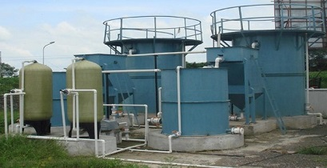

Effluent Treatment Plants (ETP) are designed to treat industrial wastewater by removing harmful pollutants. This process ensures that the treated water can be safely discharged or reused. Explore the features, process, and applications of ETPs below.
Overview
Effluent Treatment Plants (ETP) are essential for treating industrial wastewater and ensuring that harmful chemicals, solids, and toxins are removed before the water is safely disposed of or reused. ETPs help industries comply with environmental regulations while conserving water resources.
Features
- Advanced Treatment Technology: Uses physical, chemical, and biological processes to treat effluents effectively.
- Customized Designs: Tailored to meet the specific needs of various industries.
- Environmentally Friendly: Helps industries meet environmental regulations and discharge standards.
- Compact & Space-Efficient: Ideal for industries with limited space for treatment units.
- Cost-Effective: Designed for minimal operational and maintenance costs.
Process
The ETP process typically follows these stages:
- Pre-Treatment: Large particles and debris are removed from the wastewater through screening.
- Primary Treatment: Physical processes, such as sedimentation and flotation, remove suspended solids and oils.
- Secondary Treatment: Biological processes, such as activated sludge or biofilters, break down organic contaminants.
- Tertiary Treatment: Advanced treatments, including filtration, chemical dosing, or membrane filtration, remove remaining pollutants.
- Disinfection: The treated effluent is disinfected to kill pathogens before disposal or reuse.

Applications
- Manufacturing: Used to treat wastewater from textile, chemical, pharmaceutical, and food industries.
- Mining: Effluent from mining processes can be treated to reduce environmental impact.
- Paper & Pulp: Treats effluent containing fibers, chemicals, and organic pollutants from the paper industry.
- Automotive: Used for treating wastewater from vehicle manufacturing and maintenance processes.
- Steel & Metallurgy: Treats heavy metal-contaminated wastewater from steel plants and other metal processing industries.